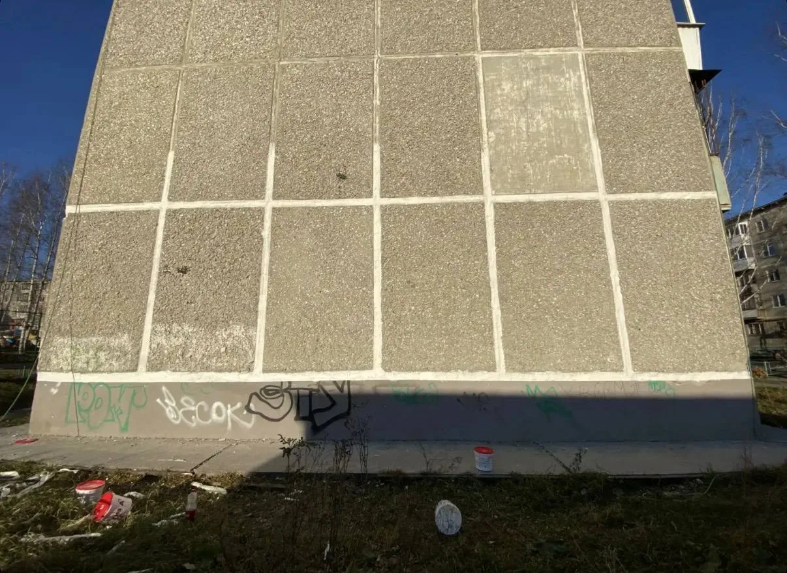
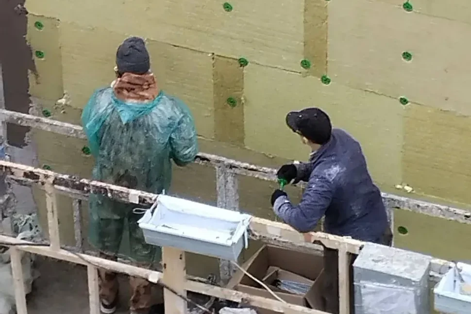
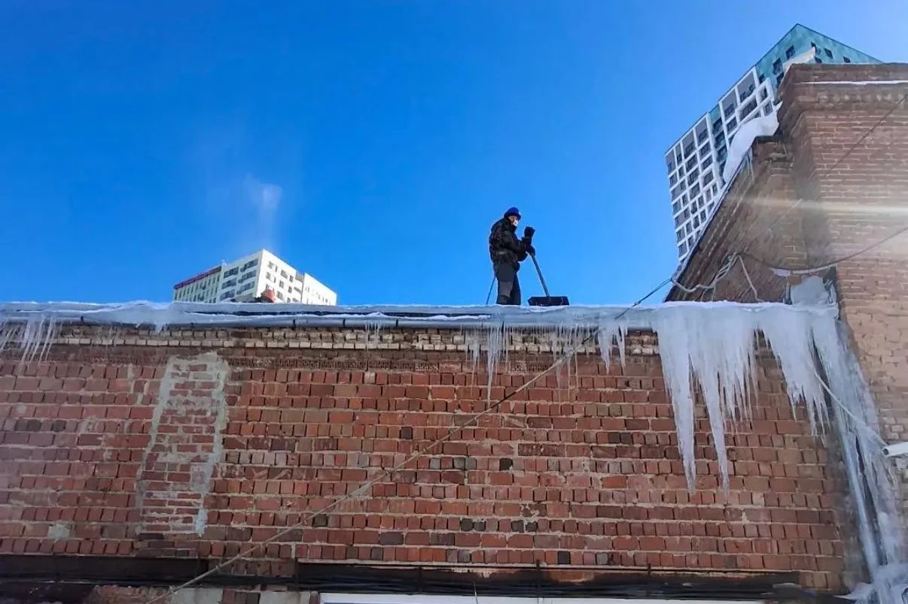
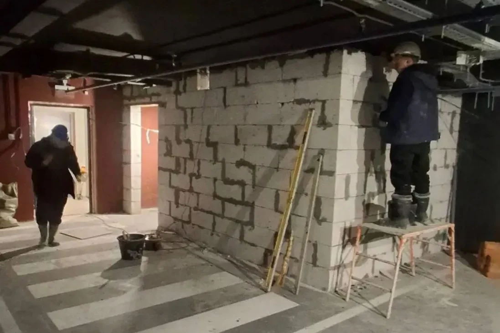

Межпанельные швы
Утепление стыков панелей, восстановление наружной заделки и фотофиксация скрытых работ.
Подробнее о работахСвоя бригада для УК, ТСЖ и ЖСК. Закупаем материалы за свой счёт, оплату принимаем по завершении этапа.

Утепление стыков панелей, восстановление наружной заделки и фотофиксация скрытых работ.
Подробнее о работах
Окраска жилых фасадов, утепление торцов и ремонт отделки у окон, балконов и цоколей.
Подробнее о работах
Ремонт козырьков и кровли, устройство примыканий, водостоки и очистка крыш зимой.
Подробнее о работах
Подъезды, входные группы, подвалы и технические помещения. Демонтаж, кладка и восстановление отделки.
Подробнее о работахФасады, кровли и подъезды в работе. Нажмите на альбом, чтобы рассмотреть детали.
Старт финансируем сами. Смету и график приёмки согласуем под бюджет и задачи конкретного дома.
Условия сотрудничестваРазбираем заявку и дефектную ведомость, фиксируем состояние конструкций.
Определяем материалы, объёмы и этапы. Закрепляем условия и гарантию в договоре.
Закупаем материалы за свой счёт. Фотографируем скрытые работы до нанесения финишного покрытия.
Предоставляем фотоотчёт и закрывающие документы КС-2 и КС-3. Оплата — после приёмки.
Вадим, руководитель. Можно сразу прислать фотографии, адрес дома или ведомость работ.